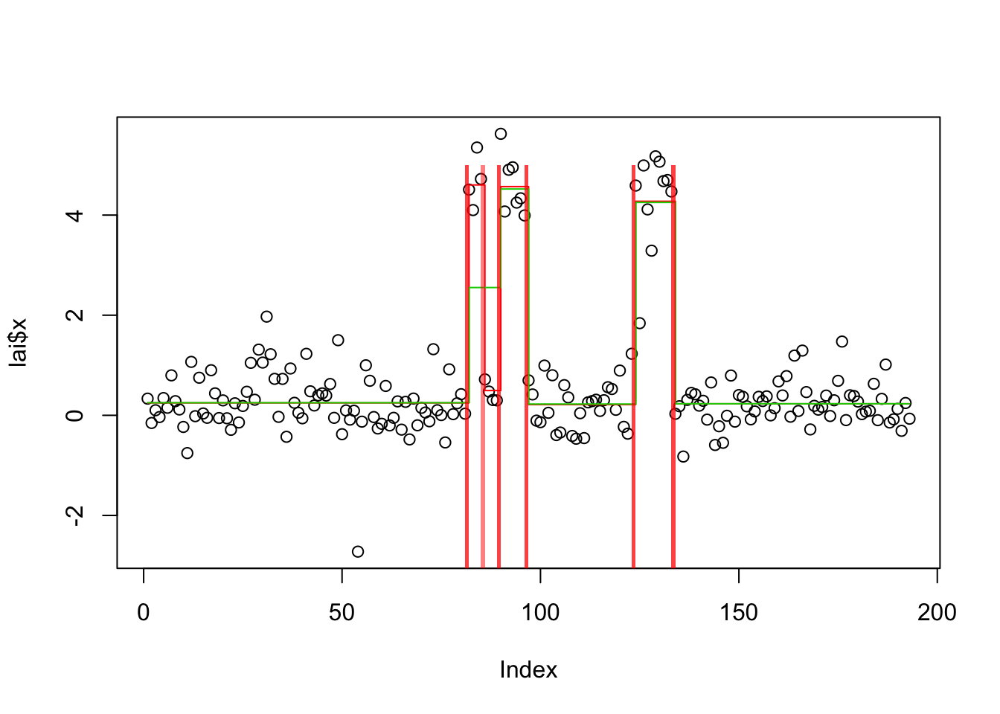
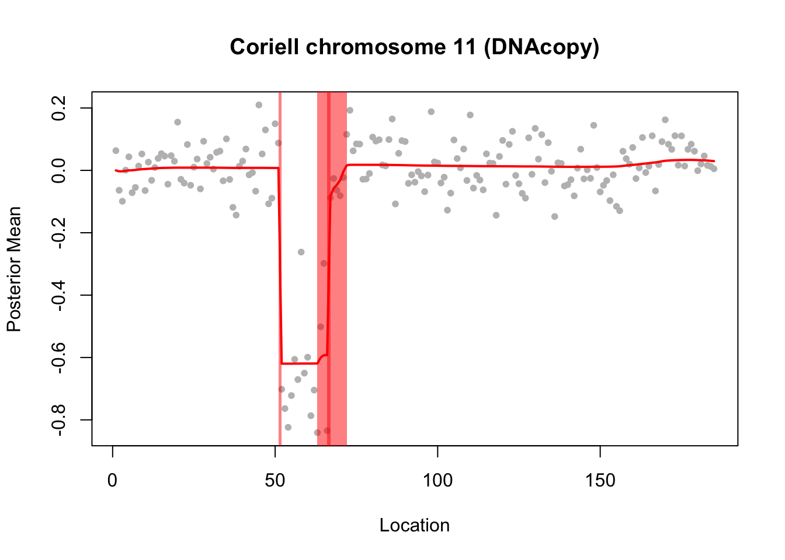

changepoint
stephens999
2018-10-18
Last updated: 2018-10-22
workflowr checks: (Click a bullet for more information)-
✔ R Markdown file: up-to-date
Great! Since the R Markdown file has been committed to the Git repository, you know the exact version of the code that produced these results.
-
✔ Environment: empty
Great job! The global environment was empty. Objects defined in the global environment can affect the analysis in your R Markdown file in unknown ways. For reproduciblity it’s best to always run the code in an empty environment.
-
✔ Seed:
set.seed(20180414)The command
set.seed(20180414)was run prior to running the code in the R Markdown file. Setting a seed ensures that any results that rely on randomness, e.g. subsampling or permutations, are reproducible. -
✔ Session information: recorded
Great job! Recording the operating system, R version, and package versions is critical for reproducibility.
-
Great! You are using Git for version control. Tracking code development and connecting the code version to the results is critical for reproducibility. The version displayed above was the version of the Git repository at the time these results were generated.✔ Repository version: d6932aa
Note that you need to be careful to ensure that all relevant files for the analysis have been committed to Git prior to generating the results (you can usewflow_publishorwflow_git_commit). workflowr only checks the R Markdown file, but you know if there are other scripts or data files that it depends on. Below is the status of the Git repository when the results were generated:
Note that any generated files, e.g. HTML, png, CSS, etc., are not included in this status report because it is ok for generated content to have uncommitted changes.Ignored files: Ignored: .DS_Store Ignored: .Rhistory Ignored: .Rproj.user/ Ignored: analysis/.Rhistory Untracked files: Untracked: analysis/cp_convergence.Rmd Untracked: analysis/null.Rmd Untracked: analysis/test.Rmd Untracked: data/geneMatrix.tsv Untracked: data/liter_data_4_summarize_ld_1_lm_less_3.rds Untracked: data/meta.tsv Untracked: docs/figure/cp_convergence.Rmd/ Untracked: docs/figure/test.Rmd/
Expand here to see past versions:
| File | Version | Author | Date | Message |
|---|---|---|---|---|
| Rmd | d6932aa | stephens999 | 2018-10-22 | workflowr::wflow_publish(“analysis/changepoint.Rmd”) |
| html | 07cb570 | stephens999 | 2018-10-19 | Build site. |
| Rmd | 744b917 | stephens999 | 2018-10-19 | workflowr::wflow_publish(“analysis/changepoint.Rmd”) |
| html | a45f3cd | stephens999 | 2018-10-18 | Build site. |
| Rmd | 04dec25 | stephens999 | 2018-10-18 | workflowr::wflow_publish(“analysis/changepoint.Rmd”) |
Introduction
Here we try susie on some example change point problems, and compare with other methods for change point detection in the changepoint package (penalized methods), bcp package (Bayesian MCMC method), genlasso (L1 penalty method), and L0learn (L0 penalty).
First we define some useful functions to run susie and other methods on changepoint problems and plot the CSs.
library("susieR")
library("genlasso")Loading required package: MatrixLoading required package: igraph
Attaching package: 'igraph'The following objects are masked from 'package:stats':
decompose, spectrumThe following object is masked from 'package:base':
unionlibrary("L0Learn")
library("bcp")Loading required package: gridlibrary("changepoint")Loading required package: zoo
Attaching package: 'zoo'The following objects are masked from 'package:base':
as.Date, as.Date.numericSuccessfully loaded changepoint package version 2.2.2
NOTE: Predefined penalty values changed in version 2.2. Previous penalty values with a postfix 1 i.e. SIC1 are now without i.e. SIC and previous penalties without a postfix i.e. SIC are now with a postfix 0 i.e. SIC0. See NEWS and help files for further details.library("ggplot2")
susie_cp = function(y,auto=FALSE,...){
n=length(y)
X = matrix(0,nrow=n,ncol=n-1)
for(j in 1:(n-1)){
for(i in (j+1):n){
X[i,j] = 1
}
}
if(auto){
s = susie_auto(X,y,...)
} else {
s = susie(X,y,...)
}
return(s)
}
#plot a time series y with confidence sets from susie fit s overlaid
# does - 0.5 so that singletons show up
# this is a ggplot version
susie_plot_cp = function(s,y){
df<-data.frame(x = 1:length(y),y = y)
CS = s$sets$cs
p= ggplot(df) + geom_point(mapping=aes_string(x="x", y="y"))
for(i in 1:length(CS)){
p = p + annotate("rect", fill = "red", alpha = 0.5,
xmin = min(CS[[i]])-0.5, xmax = max(CS[[i]])+0.5,
ymin = -Inf, ymax = Inf)
}
p
}
# this is just a function to add the changepoints to a base grapics plot
plot_cs = function(s){
CS = s$sets$cs
for(i in 1:length(CS)){
rect(min(CS[[i]]),-5,max(CS[[i]])+1,5,col = rgb(1,0,0,alpha=0.5),border=NA)
}
}
#ggplot function for changepoint results
plot_cp = function(df){
#unwritten!
}
get_obj = function(s){
return(s$elbo[length(s$elbo)])
}This is a wrapper for L0learn
# wrapper to apply L0Learn to changepoint analysis
#coordinate ascent may not work so well so I use the slower/better algorithm, CDPSI
l0_cp = function(y,algorithm="CDPSI",maxSuppSize=20,...){
n=length(y)
X = matrix(0,nrow=n,ncol=n-1)
for(j in 1:(n-1)){
for(i in (j+1):n){
X[i,j] = 1
}
}
y.l0.cv = L0Learn.cvfit(X,y,nFolds=5,seed=1,penalty="L0",maxSuppSize = maxSuppSize,algorithm=algorithm,...)
opt = which.min(y.l0.cv$cvMeans[[1]])
yhat = predict(y.l0.cv, newx = X,lambda=y.l0.cv$fit$lambda[[1]][opt])
return(list(fit = y.l0.cv$fit,yhat=yhat))
}Here is a wrapper for trendfiltering:
tf_cp = function(x){
x.tf = trendfilter(x,ord=0)
x.tf.cv = cv.trendfilter(x.tf)
opt = which(x.tf$lambda==x.tf.cv$lambda.min) #optimal value of lambda
yhat= x.tf$fit[,opt]
return(list(fit=x.tf,yhat =yhat))
}Simple simulated example
This example comes from Killick and Eckley
set.seed(10)
eg1=list()
eg1$x=c(rnorm(100,0,1),rnorm(100,1,1),rnorm(100,0,1),rnorm(100,0.2,1))
eg1$true_mean = c(rep(0,100),rep(1,100),rep(0,100),rep(0.2,100))apply_methods = function(data){
# Susie
fit.s = susie_cp(data$x)
yhat.s = predict(fit.s)
# bcp
fit.bcp = bcp(data$x)
yhat.bcp = fit.bcp$posterior.mean
# L0Learn
res.l0= l0_cp(data$x)
fit.l0 = res.l0$fit
yhat.l0 = res.l0$yhat
# trendfilter
res.tf = tf_cp(data$x)
fit.tf = res.tf$fit
yhat.tf = res.tf$yhat
# changepoint
fit.cp = cpt.mean(data$x,method="PELT")
d = diff(c(0,cpts(fit.cp),length(data$x)))
yhat.cp = rep(coef(fit.cp)$mean,d)
return(list(fit = list(susie=fit.s,bcp=fit.bcp,l0=fit.l0,tf=fit.tf, cp = fit.cp), yhat = list(susie=yhat.s,bcp = yhat.bcp,l0=yhat.l0,tf=yhat.tf,cp = yhat.cp)))
}
plot_results = function(res,data){
plot(data$x,col="gray")
lines(data$true_mean)
for(i in 1:length(res$yhat)){
lines(res$yhat[[i]],col=(i+1),type="s")
}
}
compute_error = function(res,data){
mse=rep(0,length(res$yhat))
for(i in 1:length(res$yhat)){
mse[i] = mean((res$yhat[[i]]-data$true_mean)^2)
}
names(mse) <- names(res$yhat)
mse
}
eg1.res = apply_methods(eg1)Fold 1 ... Fold 2 ... Fold 3 ... Fold 4 ... Fold 5 ... plot_results(eg1.res,eg1)
plot_cs(eg1.res$fit$susie)
Expand here to see past versions of unnamed-chunk-5-1.png:
| Version | Author | Date |
|---|---|---|
| a45f3cd | stephens999 | 2018-10-18 |
compute_error(eg1.res,eg1) susie bcp l0 tf cp
0.03081035 0.03669960 0.22505358 0.04564223 0.03673359 Compare PIPs of bcp and susie:
plot(eg1.res$fit$bcp$posterior.prob[-1], susie_get_PIP(eg1.res$fit$susie))
Expand here to see past versions of unnamed-chunk-6-1.png:
| Version | Author | Date |
|---|---|---|
| 07cb570 | stephens999 | 2018-10-19 |
| a45f3cd | stephens999 | 2018-10-18 |
plot(eg1.res$fit$bcp$posterior.prob[-1],col=3)
points(susie_get_PIP(eg1.res$fit$susie),col=2)Lai 2005 data
This is a real-data example from the changepoint package. Of course we do not know the truth here so cannot compute errors. But it is an interesting example because susie (run from default 0 initialization) misses a changepoint.
data(Lai2005fig4)
lai = list(x=Lai2005fig4[,5],true_mean = rep(NA,length(Lai2005fig4[,5])))
lai.res=apply_methods(lai)Fold 1 ... Fold 2 ... Fold 3 ... Fold 4 ... Fold 5 ... plot_results(lai.res,lai)
plot_cs(lai.res$fit$susie)
Expand here to see past versions of unnamed-chunk-7-1.png:
| Version | Author | Date |
|---|---|---|
| 07cb570 | stephens999 | 2018-10-19 |
| a45f3cd | stephens999 | 2018-10-18 |
Here we try initializing susie from the results from changepoint and genlasso:
s0.cp = susie_init_coef(cpts(lai.res$fit$cp),diff(unlist(coef(lai.res$fit$cp))),length(lai$x)-1)
lai.s.cp0 = susie_cp(lai$x,s_init=s0.cp,estimate_prior_variance=FALSE)
lai.s.cp = susie_cp(lai$x,s_init=lai.s.cp0,estimate_prior_variance=TRUE)
bhat = lai.res$fit$tf$beta[,10] #result with 10 changepoints
dhat = diff(bhat)
dhat = ifelse(abs(dhat)>1e-8, dhat,0)
s0.tf = susie_init_coef(which(dhat!=0),dhat[dhat!=0],length(lai$x)-1)
lai.s.tf0 = susie_cp(lai$x,s_init=s0.tf,estimate_prior_variance=FALSE)
lai.s.tf = susie_cp(lai$x,s_init=lai.s.tf0,estimate_prior_variance=TRUE)
plot(lai$x)
lines(predict(lai.s.cp),col=2,type="s")
lines(predict(lai.s.tf),col=3,type="s")
get_obj(lai.s.cp)[1] -216.9692get_obj(lai.s.tf)[1] -220.1951plot_cs(lai.s.cp)
plot_cs(lai.s.tf)
Expand here to see past versions of unnamed-chunk-8-1.png:
| Version | Author | Date |
|---|---|---|
| 07cb570 | stephens999 | 2018-10-19 |
Simulation based on Lai et al
These data looked interesting because they seemed to be a bit challenging for some methods. But we do not know the truth of course. So I simulated some data based on the fit.
In the results here we see that trendfilter tends to include too many changepoints (not suprising); other methods produce similar results. The different behavior of bcp here vs the real data suggest to me that the real data may show non-gaussian residuals (eg that one outlier(?) point).
set.seed(1)
lai.mean = rep(unlist(coef(lai.res$fit$cp)),diff(c(0,cpts(lai.res$fit$cp),length(lai$x))))
lai.sd = sd(lai$x-lai.mean)
lai.sim = list(x=rnorm(length(lai.mean),lai.mean,lai.sd),true_mean=lai.mean)
lai.sim.res = apply_methods(lai.sim)Fold 1 ... Fold 2 ... Fold 3 ... Fold 4 ... Fold 5 ... plot_results(lai.sim.res,lai.sim)
plot_cs(lai.sim.res$fit$susie)
Expand here to see past versions of unnamed-chunk-9-1.png:
| Version | Author | Date |
|---|---|---|
| 07cb570 | stephens999 | 2018-10-19 |
compute_error(lai.sim.res,lai.sim) susie bcp l0 tf cp
0.019417479 0.015219952 0.060841408 0.036559321 0.008346073 s0.cp = susie_init_coef(cpts(lai.sim.res$fit$cp),diff(unlist(coef(lai.sim.res$fit$cp))),length(lai.sim$x)-1)
lai.sim.s.cp = susie_cp(lai.sim$x,s_init=s0.cp,estimate_prior_variance=FALSE)
lai.sim.s.cp2 = susie_cp(lai.sim$x,s_init=lai.sim.s.cp,estimate_prior_variance=TRUE)
plot_results(lai.sim.res,lai.sim)
plot_cs(lai.sim.s.cp2)
Expand here to see past versions of unnamed-chunk-10-1.png:
| Version | Author | Date |
|---|---|---|
| 07cb570 | stephens999 | 2018-10-19 |
mean((predict(lai.sim.s.cp2)-lai.sim$true_mean)^2)[1] 0.008400276Example from the BCP package
This one is described as a “hard” example (with one change point) in the bcp examples.
set.seed(5)
x <- rep(c(0,1), each=50)
eg2 = list(x = x + rnorm(50, sd=1), true_mean = x)
eg2.res = apply_methods(eg2)Fold 1 ... Fold 2 ... Fold 3 ... Fold 4 ... Fold 5 ... plot_results(eg2.res,eg2)
plot_cs(eg2.res$fit$susie)Warning in min(CS[[i]]): no non-missing arguments to min; returning InfWarning in max(CS[[i]]): no non-missing arguments to max; returning -InfWarning in min(CS[[i]]): no non-missing arguments to min; returning InfWarning in max(CS[[i]]): no non-missing arguments to max; returning -InfExpand here to see past versions of unnamed-chunk-11-1.png:
| Version | Author | Date |
|---|---|---|
| 07cb570 | stephens999 | 2018-10-19 |
compute_error(eg2.res,eg2) susie bcp l0 tf cp
0.05442873 0.13518020 0.28787237 0.35619464 0.01434871 Try susie initialized from cp:
s0.cp = susie_init_coef(cpts(eg2.res$fit$cp),diff(unlist(coef(eg2.res$fit$cp))),length(eg2$x)-1)
eg2.s.cp = susie_cp(eg2$x,s_init=s0.cp,estimate_prior_variance=FALSE)
eg2.s.cp2 = susie_cp(eg2$x,s_init=eg2.s.cp,estimate_prior_variance=TRUE)
mean((predict(eg2.s.cp2)-eg2$true_mean)^2)[1] 0.02948344DNA segmentation example from bcp package
This example comes from demo(coriell) in the bcp package.
data(coriell)
chrom11 <- as.vector(na.omit(coriell$Coriell.05296[coriell$Chromosome==11]))
chrom11.bcp <- bcp(chrom11)
plot(chrom11.bcp, main="Coriell chromosome 11 (bcp)")
Expand here to see past versions of unnamed-chunk-13-1.png:
| Version | Author | Date |
|---|---|---|
| 07cb570 | stephens999 | 2018-10-19 |
Here it compares results with DNAcopy package (also part of the demo)
library("DNAcopy")
n <- length(chrom11)
cbs <- segment(CNA(chrom11, rep(1, n), 1:n), verbose = 0)
cbs.ests <- rep(unlist(cbs$output[6]), unlist(cbs$output[5]))
op <- par(mfrow=c(2,1),col.lab="black",col.main="black")
op2 <- par(mar=c(0,4,4,2),xaxt="n", cex.axis=0.75)
plot(1:n, chrom11.bcp$data[,2], col="grey", pch=20, xlab="Location",
ylab="Posterior Mean",
main="Coriell chromosome 11 (DNAcopy)")
lines(cbs.ests, col="red")
lines(chrom11.bcp$posterior.mean, lwd=2)
par(op2)
op3 <- par(mar=c(5,4,0,2), xaxt="s", cex.axis=0.75)
plot(1:n, chrom11.bcp$posterior.prob, type="l", ylim=c(0,1),
xlab="Location", ylab="Posterior Probability", main="")
for (i in 1:(dim(cbs$output)[1]-1)) {
abline(v=cbs$output$loc.end[i], col="red")
}
Expand here to see past versions of unnamed-chunk-14-1.png:
| Version | Author | Date |
|---|---|---|
| 07cb570 | stephens999 | 2018-10-19 |
par(op3)
par(op)Try susie. Note that this example illustrates a case where a variable (here 66) occurs in multiple CSs… something we don’t yet fully understand the implications of I think.
chrom11.s = susie_cp(chrom11)
plot(1:n, chrom11, col="grey", pch=20, xlab="Location",
ylab="Posterior Mean",
main="Coriell chromosome 11 (DNAcopy)")
lines(predict(chrom11.s),col=2,lwd=2)
chrom11.s$sets$cs
$cs$L2
[1] 51
$cs$L3
[1] 66
$cs$L4
[1] 63 64 66
$cs$L1
[1] 66 67 68 69 70 71
$purity
min.abs.corr mean.abs.corr median.abs.corr
L2 1.0000000 1.0000000 1.0000000
L3 1.0000000 1.0000000 1.0000000
L4 0.9649213 0.9843474 0.9880822
L1 0.9436735 0.9778424 0.9772150
$cs_index
[1] 2 3 4 1
$coverage
[1] 0.95 abline(v=66)
abline(v=51)
Expand here to see past versions of unnamed-chunk-15-1.png:
| Version | Author | Date |
|---|---|---|
| 07cb570 | stephens999 | 2018-10-19 |
An example from the DNAcopy segment function:
set.seed(51)
true_mean = rep(c(-0.2,0.1,1,-0.5,0.2,-0.5,0.1,-0.2),c(137,87,17,49,29,52,87,42))
genomdat <- rnorm(500, sd=0.2) + true_mean
plot(genomdat)
Expand here to see past versions of unnamed-chunk-16-1.png:
| Version | Author | Date |
|---|---|---|
| 07cb570 | stephens999 | 2018-10-19 |
chrom <- rep(1:2,c(290,210))
maploc <- c(1:290,1:210)
genomdat.seg <- segment(CNA(genomdat, chrom, maploc))Analyzing: Sample.1 plot(genomdat.seg)
genomdat.s = susie_cp(genomdat)
plot_cs(genomdat.s)
lines(true_mean,col=1,type="s")
plot(genomdat.s$pip)
genomdat.bcp = bcp(genomdat)
plot(genomdat.bcp)Expand here to see past versions of unnamed-chunk-17-1.png:
| Version | Author | Date |
|---|---|---|
| 07cb570 | stephens999 | 2018-10-19 |
plot(genomdat.bcp$posterior.mean,predict(genomdat.s))
This example from DNAcopy too. (commented out for now as takes too long.)
# data(coriell)
#
# #Combine into one CNA object to prepare for analysis on Chromosomes 1-23
#
# CNA.object <-CNA(cbind(coriell$Coriell.05296,coriell$Coriell.13330),coriell$Chromosome,coriell$Position,data.type="logratio",sampleid=c("c05296","c13330"))
#
# s = susie_cp(CNA.object$c13330[!is.na(CNA.object$c13330)])
# plot(CNA.object$c13330[!is.na(CNA.object$c13330)])
# plot_cs(s)Session information
sessionInfo()R version 3.5.1 (2018-07-02)
Platform: x86_64-apple-darwin15.6.0 (64-bit)
Running under: OS X El Capitan 10.11.6
Matrix products: default
BLAS: /Library/Frameworks/R.framework/Versions/3.5/Resources/lib/libRblas.0.dylib
LAPACK: /Library/Frameworks/R.framework/Versions/3.5/Resources/lib/libRlapack.dylib
locale:
[1] en_US.UTF-8/en_US.UTF-8/en_US.UTF-8/C/en_US.UTF-8/en_US.UTF-8
attached base packages:
[1] grid stats graphics grDevices utils datasets methods
[8] base
other attached packages:
[1] DNAcopy_1.55.0 ggplot2_3.0.0 changepoint_2.2.2
[4] zoo_1.8-4 bcp_4.0.3 L0Learn_1.0.7
[7] genlasso_1.4 igraph_1.2.2 Matrix_1.2-14
[10] susieR_0.5.0.0347
loaded via a namespace (and not attached):
[1] Rcpp_0.12.19 bindr_0.1.1 compiler_3.5.1
[4] pillar_1.3.0 git2r_0.23.0 plyr_1.8.4
[7] workflowr_1.1.1 R.methodsS3_1.7.1 R.utils_2.7.0
[10] tools_3.5.1 digest_0.6.18 evaluate_0.12
[13] tibble_1.4.2 gtable_0.2.0 lattice_0.20-35
[16] pkgconfig_2.0.2 rlang_0.2.2 yaml_2.2.0
[19] bindrcpp_0.2.2 withr_2.1.2 stringr_1.3.1
[22] dplyr_0.7.7 knitr_1.20 tidyselect_0.2.5
[25] rprojroot_1.3-2 glue_1.3.0 R6_2.3.0
[28] rmarkdown_1.10 reshape2_1.4.3 purrr_0.2.5
[31] magrittr_1.5 whisker_0.3-2 matrixStats_0.54.0
[34] backports_1.1.2 scales_1.0.0 htmltools_0.3.6
[37] assertthat_0.2.0 colorspace_1.3-2 stringi_1.2.4
[40] lazyeval_0.2.1 munsell_0.5.0 crayon_1.3.4
[43] R.oo_1.22.0 This reproducible R Markdown analysis was created with workflowr 1.1.1